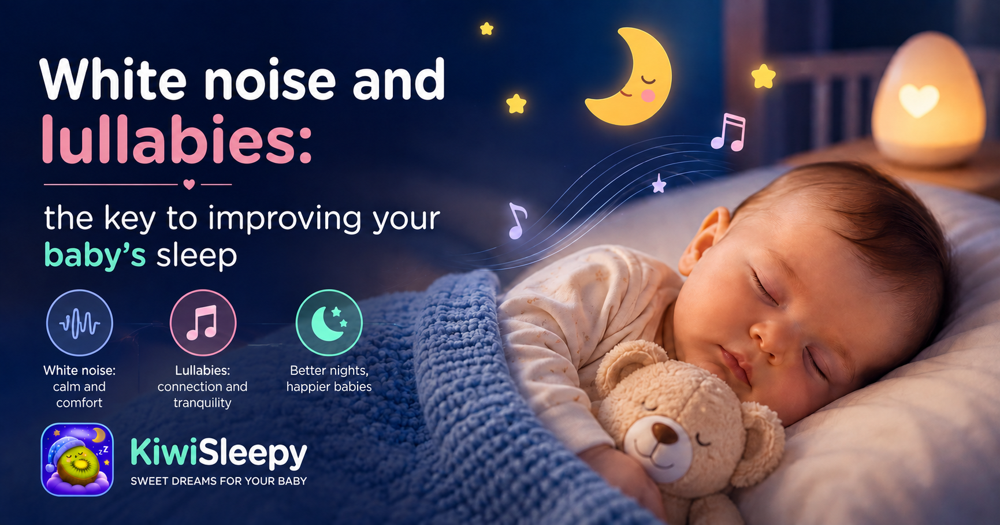

Pubblicato nel: Luglio 2026

Le regressioni del sonno possono causare risvegli frequenti e difficoltà a riaddormentarsi. In queste situazioni, il rumore bianco e le ninne nanne sono strumenti che possono aiutare a creare un ambiente rilassante e favorire il riposo del bambino.
Sebbene non eliminino la regressione, possono facilitare l'addormentamento e il riaddormentamento del bambino dopo un risveglio.
Il rumore bianco consiste in un suono continuo e uniforme che aiuta a ridurre gli stimoli ambientali.
Tra i suoi principali vantaggi ci sono:
Per un uso sicuro, si raccomanda di mantenere un volume moderato (sotto i 50 dB) e di posizionare il dispositivo lontano dalla culla.
Le ninne nanne aiutano il bambino in un modo diverso.
I loro principali vantaggi sono:
Molte famiglie usano sempre la stessa ninna nanna affinché il bambino la associ al momento di riposare.
La migliore strategia è di solito combinare una routine stabile con suoni rilassanti.
Per esempio:
Questa combinazione aiuta a creare un ambiente prevedibile e rilassante, specialmente durante le regressioni del sonno.
KiwiSleepy riunisce in un'unica applicazione tutti gli strumenti necessari per creare un ambiente di sonno ideale.
Con KiwiSleepy puoi:
Se il tuo bambino sta attraversando una regressione del sonno, stabilire una routine coerente e usare suoni rilassanti può fare una grande differenza. KiwiSleepy è progettato proprio per aiutarti a creare quelle abitudini che favoriscono un riposo più tranquillo, sia per il tuo bambino che per tutta la famiglia.